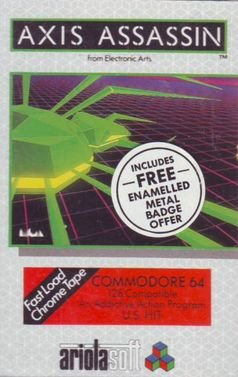

Axis Assassin
Axis Assassin is a video game developed and published by Electronic Arts in 1983. In the game, players control a covert operative infiltrating enemy territory to sabotage key installations. With its challenging gameplay and engaging storyline, Axis Assassin became a popular title among gamers during the early '80s.